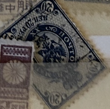
| SOURCE | TITLE| IMAGE MATCH | click to source page |
| Cherrystone Auctions | The G. Denisenko Collection of Imperial Russia; U.S. & Worldwide Stamps - March 7, 2007 and March 13-14, 2007 - RUSSIA 1889-92 Issues | 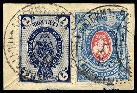 |
| eBay | Zemstvo Russia local Bogorodsk Schmidt I 1869 cut from cover MHOG | eBay | 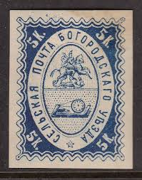 |
| Russian Philately | Pskov Sch #9 for sale at Russian Philately | 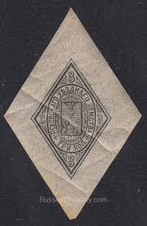 |
| Russian Philately | Pskov Zemstvo Stamps for Sale | 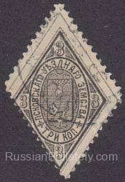 |
| Stamp Auction | Corinphila Auctions AG Sale - 309 Page 180 | 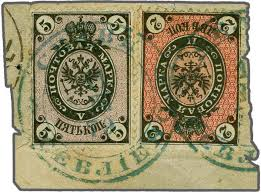 |
| Cherrystone Auctions | U.S. & Worldwide Stamps - June 27-28, 2012 - RUSSIA | 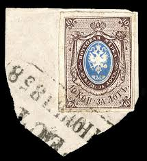 |
| Cherrystone Auctions | Russian Stamps (Internet Only) - May 16, 2012 - Lot #2048 | 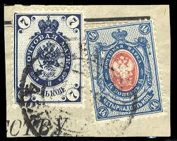 |
| PICRYL | Stamp-rusempire1900-postalmark-0,01 - postal stamp - PICRYL - Public Domain Media Search Engine Public Domain Search | 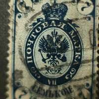 |
| Stamp Auction Network | Spink USA Sale - 166 Page 31 | 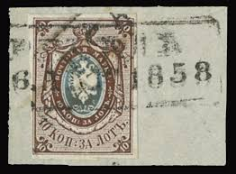 |
| Cherrystone Auctions | U.S. & Worldwide Stamps - March 13-14, 2013 - RUSSIA | 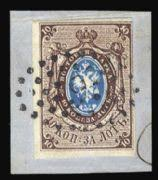 |
| eBay | Russia 1866 SC 19 used . rtc9020 | eBay | 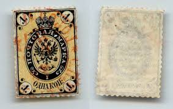 |
| Cherrystone Auctions | The G. Denisenko Collection of Imperial Russia; U.S. & Worldwide Stamps - March 7, 2007 and March 13-14, 2007 | 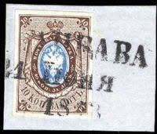 |
| Stamp Auction Network | Daniel F. Kelleher Auctions, LLC Sale - 682 Page 22 | 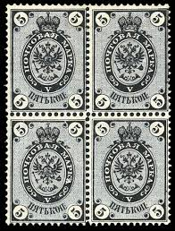 |
| Stamp Auction | Corinphila Auctions AG Sale - 333 Page 83 | 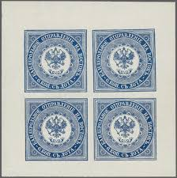 |
| Cherrystone Auctions | Russian Local Post (Zemstvo); U.S. & Worldwide Stamps - February 8, 2012 and February 22-23, 2012 - RUSSIA - ZEMSTVO BOGORODSK | 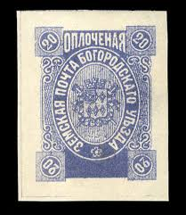 |
| eBay | russia pre-1880 5k local stamp,rare! o1281 | eBay | 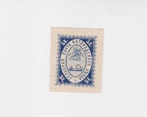 |
| Cherrystone Auctions | The G. Denisenko Collection of Imperial Russia; U.S. & Worldwide Stamps - March 7, 2007 and March 13-14, 2007 - RUSSIA 1884-88 Issue | 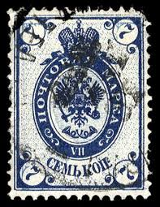 |
| eBay | RUSSIA YR 1863,OFFICE IN TURKEY(LEVANT), SC 1,MLH,HCV,SIGNED 3,EXTREMELY RARE | eBay | 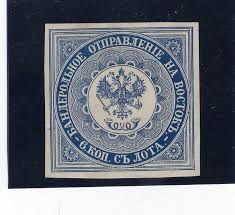 |
| eBay | Russia USSR 1944 • Sc# 928 3 r. • A. Nevskii (war order) • pair MNH OG XF (S-77) | eBay | 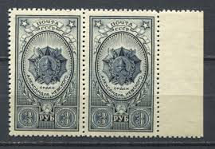 |
| Send something spooky with this handstamp, which postal workers in the 1800s used to cancel postage and make sure stamps were only used once. Handstamp marks ranged from circles, lines and dates | 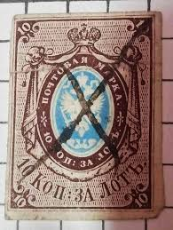 | |
| eBay | 1861-1870 Year of Issue Russian & Soviet Union Stamps for sale | eBay | 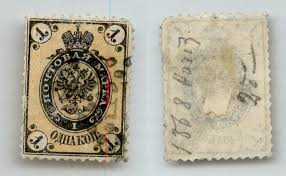 |
| eBay | Mint Hinged Blue Russian & Soviet Union Stamps for sale | eBay | 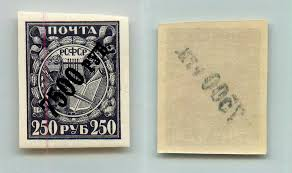 |
| Etsy | Buy 5 Kopecks 1727, Catherine I Coin, Russian Empire Coin, Imperial Russian Coin, Tsarina Catherine I, 18 Century Coin, KRESTOVIK, Cross Kopeck Online in India - Etsy | 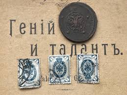 |
| Wikimedia.org | File:Russia Levant third issue 1867 - type III.jpg - Wikimedia Commons | 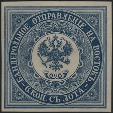 |
| Loral Stamps | Russia Specialized - Imperial Russia | 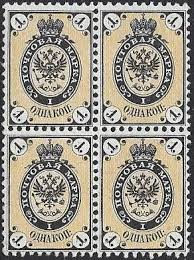 |
| Cherrystone Auctions | Mikulski Collection of Imperial Russia (1864-1905) - December 8, 2004 | 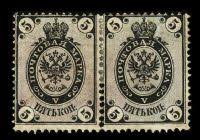 |
| eBay | Russian Federation Coat-of-Arms 1865 Scott's #14 Grade: VG 57 | eBay | 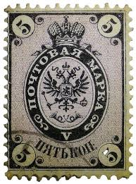 |
| eBay | RUSSIA LEVANT-FOURNIER FORGERY-AFFIXED TO PAGE-MARKED FAUX -YV # 1 (*) -VF @31 | eBay | 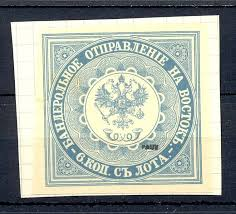 |
| Cherrystone Auctions | U.S. and Worldwide Stamps; Specialized Russia - September 16-18, 2008 - RUSSIA Russian Offices in the Turkish Empire | 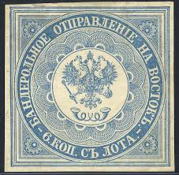 |
| eBay | Multi-Color 1881-1890 Year of Issue Russian & Soviet Union Stamps for sale | eBay | 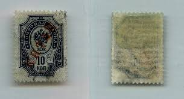 |
| Cherrystone Auctions | Germany; Serebrakian Stock Part II; U.S. & Worldwide Stamps - May 8-9, 2007 and May 15-16, 2007 - RUSSIA Russian Offices in Turkish Empire | 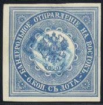 |
| Stamp Community Forum | Help With Russia, 1905, 1,2,3,5,7k? - Stamp Community Forum | 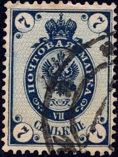 |
| Cherrystone Auctions | Russian Stamps (Internet Only) - May 16, 2012 - Lot #2043 | 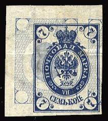 |
| Loral Stamps | Offices and States - China | 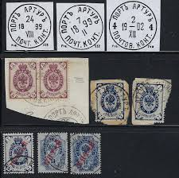 |
| Stamp Auction | Schuyler J. Rumsey Philatelic Auctions Sale - 72 Page 25 | 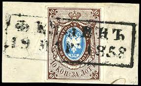 |
| Cherrystone Auctions | The G. Denisenko Collection of Imperial Russia; U.S. & Worldwide Stamps - March 7, 2007 and March 13-14, 2007 - RUSSIA 1857 Russia Number One | 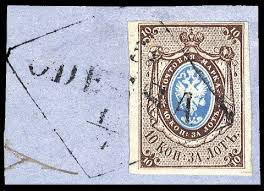 |
| Stamp Community Forum | Possible Inverted Russian 7 Kopek - Stamp Community Forum | 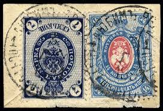 |
| eBay | russia 1880 5R imperf,used s1398 | eBay | 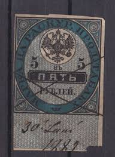 |
| Loral Stamps | Offices and States - Turkey | 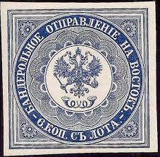 |
| JF-Stamps | Finske frimærker, breve, helsager, posthistorie, postkort og cinderella - Se mere her | 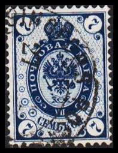 |
| Cherrystone Auctions | The G. Denisenko Collection of Imperial Russia; U.S. & Worldwide Stamps - March 7, 2007 and March 13-14, 2007 - RUSSIA 1902 Issue | 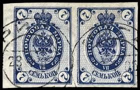 |
| eBay | RARE SILVER IVAN THE TERRIBLE 1533 COIN 2 Kopek 1877 STAMP 7 Kopek 1883 Lot | eBay | 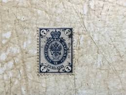 |
| Vitber | Postcard, language of stamps, Russia, beginning of 20th cent., 9 x 13.8 cm | 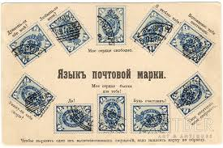 |
| Smithsonian Institution | G.H. Kaestlin Specialized Collection of Russian Imperial and Zemstvo Stamps | National Postal Museum | 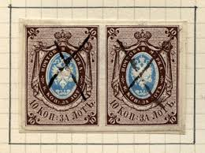 |
| stamprussia.com | Russian Used Stamps of 1918-1925. Online Catalogue. | 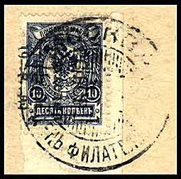 |
| Merkki-Albert | Leimoja Archives - Sivu 4 13:stä - Merkki-Albert | 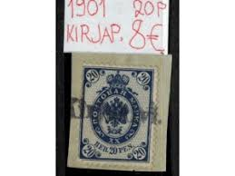 |
| eBay | Russia 1889 Coat of Arms 7k SG: 55 Dark Blue Lightly Hinged Stamp | eBay | 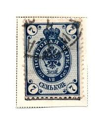 |
| buyhungarianstamps.com | 971-973 Russia - Order of Victory (MNH) – Eastern Europe Postage Stamps | Hungaria Stamp Exchange | 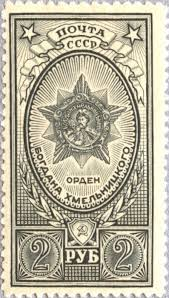 |
| Stamp Community Forum | Russia Stamps 1 And 7 - Stamp Community Forum | 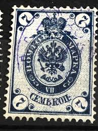 |
| eBay | Tannu Tuva🐫Year 1936. Sc. 71/91 set on registered cover. High cat. 12th set. | eBay | |
| eBay | RUSSIA YR 1922,SC B30-33,MI 1-4,USED,HELP HUNGER,VHCV,SIGNED STOLOW,VERY RARE | eBay | |
| Cherrystone Auctions | Burkeiwicz Stock; U.S. & Worldwide Stamps & Postal History - August 26, 2004 and September 8-9, 2004 - RUSSIAN OFFICES IN THE TURKISH EMPIRE | |
| eBay | MOMEN: RUSSIAN LEVANT SC #1b 1863 IMPERF MINT OG H MEDIUM PAPER XF LOT #62857 | eBay | |
| eBay | Russia RSFSR 1922 SC 210 mint different shades and paper. rtc7217 | eBay | |
| telstamps.org.uk | Russian Telegraph Stamps. | |
| rusphil.com | Russian Empire. First issue. 1857 - 1858 - Russian Stamp Catalogue | |
| eBay | Russia local zemstvo Pskov Sch #10 M NG | eBay | |
| Cherrystone Auctions | Mikulski Collection of Imperial Russia (1864-1905) - December 8, 2004 - 1884 7k blue | |
| eBay | Russia 1865 SC 12 used perf 14 1/2 no wmk. rtc6075 | eBay | |
| eBay | 1922 Russia registered mail cover 69 stamps envelope 7500 r overprint on 250rb | eBay |
{kind=link}